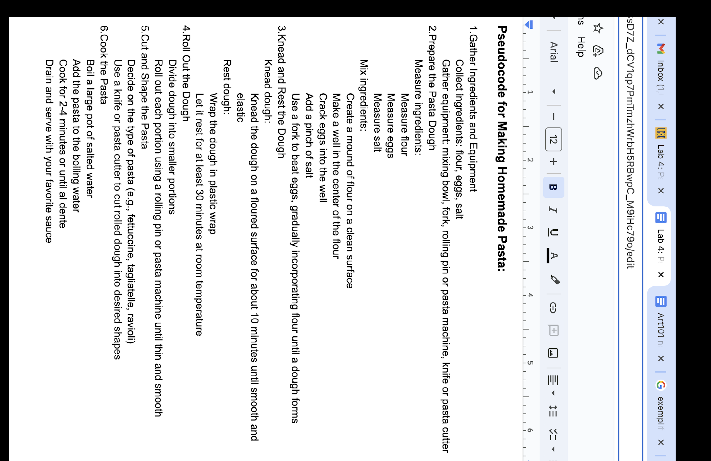

Lab 4 - Pseudcoding and Pseudocoding
Challenge
I did have trouble formating the pseudcoding, but after trial and error I was to get it the way I wanted.
Promblems
Besides the formating and ajusting the image size, I had no other issues!! to solve these problems I asked my friend's boyfriend along with my partner.
Reflection.
Although I did have some confusion, I'm proud I was able to fix my mistakes and make it work
Results
JavaScript code:
//Print the board before each turn
//Loop through each row
//Loop through each space
//Print X, O, or space
//Print a between
//Print a newline at theend
//Print a horizontal line between
//Accept user input
//prompt the player to choose a position
//Capture the player's input
//Validate user move
//Ensure the position is within bounds
//Check if the position is already occupied
//If invalid, prompt the player for a new input
//Evaluate possible moves
//Idenify all unoccupied positions on the board
//Evaluate the impact of each potenial move
//Choose computer move
//Implement a strategy for the computer to select its move
//Choose the best possible move based on the strategy
//Test for win or draw condition
//Check rows,columns,and digonals for a win condition
//Determine if the boaed is full for a draw condition